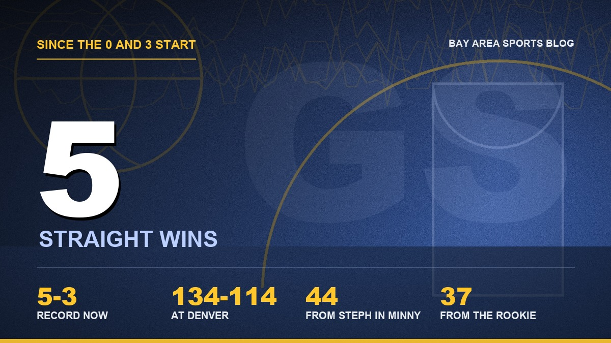
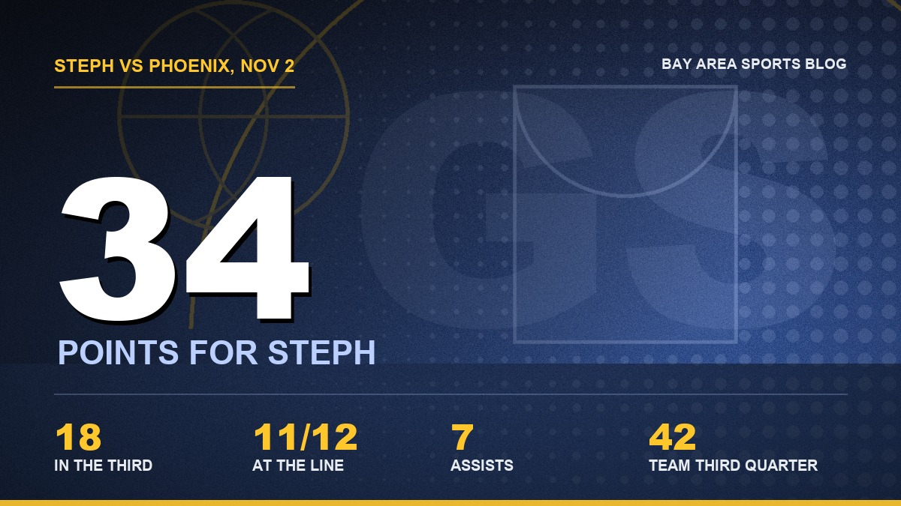

Five Straight, and I Owe the Warriors an Apology
Ten days ago they were 0 and 3 and I was texting my brother about the trade deadline. Now they've won five in a row, and Monday they did it with Draymond in the locker room.

Ten days ago I was done with this team. I mean it. We'd just lost in Phoenix to go 0 and 3, and I sent my brother a text that said, word for word, "wake me up at the trade deadline." He still has it. He sent it back to me last night at about 9:45 with no comment, just the screenshot.
Fair enough. I deserved that.
Five straight. The Warriors beat Phoenix 116 to 113 at Chase Center on Monday night, and they did it down 17, on the second night of a back to back, their third game in four nights, with Draymond Green sitting in the locker room after getting tossed in the third quarter. I don't know what this team is yet. I know it isn't the team I buried.

The first quarter made me reach for the remote
I'm going to be honest about the start of this one, because I was ready to turn it off again. Eight of 24 in the first quarter. Two of 15 from three. Two of fifteen! Steph and Draymond were both back after sitting Sunday, everybody was supposedly fresh, and we came out like the bus got lost on the Bay Bridge. Down 12 after one, down 16 at the worst of it.
Then a 12 to 0 run late in the second got it to six at the half, and I stayed on the couch. Barely.
Then Draymond lost it, and I swear it helped
Third quarter. Draymond fouls Khaman Maluach, the kid goes down, Draymond ends up on top of him, and here comes Dillon Brooks. Of course it's Dillon Brooks. It's always Dillon Brooks. They shove, they get double technicals, and since Draymond already had one, he's gone. First ejection of the season. We were down 11 when it happened.
I said a word in my living room I won't type here. My wife asked from the kitchen if somebody died.
And then the Warriors scored 42 points in that quarter. Forty two. Steph had 18 of them by himself, they hit 5 of 10 from three, and by the time the buzzer went we were tied at 93. Steph said afterward the ejection lit a fire under them, and I believe him, because I watched it happen. I've spent years yelling at Draymond for the technicals. I'm not going to pretend I didn't love what came after this one.
Don't tell him that. He doesn't need the encouragement.

Charles Bassey, of all people
Steph finished with 34, seven assists, 11 of 12 at the line. Brandin Podziemski gave us 20 on half his shots, and we needed every one. Lendeborg didn't shoot it well, 3 of 10, and still found a way to put up 16, 5 and 5, which tells you everything about where this kid's head is.
But the guy I can't stop thinking about is Charles Bassey. Career high 19 and eight rebounds off the bench. He started Sunday because we were short bodies, and I'll admit I didn't expect much. Monday night he was grabbing every miss in the first half, matching Steph point for point when nobody else could buy a bucket, and he's a huge part of why that game didn't get away from us early. Steve Kerr put it simply: "Bass was great. What a big night for him."
That's the part of this streak that's getting to me. It's never the same guy twice.
Five wins, five different heroes
Go back through it with me, because I need to see it all in one place to believe it.
Denver, in their building, 134 to 114, and the rookie goes for 31 and 12. Minnesota, 119 to 114, and Steph drops 44 and makes all 16 of his free throws while they've got him on a minutes limit. The Lakers, the team that embarrassed us on opening night, and we dig out of a hole of more than 20 and win 112 to 95 behind 31 from Steph. The Clippers, with no Steph and no Draymond, and Lendeborg goes for 37. Then Monday, with Draymond ejected and Bassey of all people helping drag us back from 17 down.
A blowout on the road, a hang on, a comeback, a night without the stars, and a rock fight. You can't fake that kind of range. Bad teams win one way, if they win at all.
Steph is averaging 30 a night. Thirty, at 38, coming off a knee that cost him 27 games last year. I keep waiting for somebody to tell me it's a small sample, and they're right, and I don't care.
So now what
My problem is I'm a Warriors fan, which means I'm wired to expect the floor to fall out. The Memphis game still bugs me, a 12 point lead with four minutes left in the home opener, and you don't forget a collapse like that because you won five in a row afterward. The rotation is still thin. Draymond's still Draymond. Steph is 38 years old and they're still sitting him some nights to protect that knee.
But we're 5 and 3. We were 0 and 3 ten days ago and I was texting my brother about the trade deadline.
Miami comes to Chase on Thursday night. Two days of rest first, which this team has earned and Steph's legs definitely need. Win that one and it's six straight, and I'll have to start admitting things out loud I'm not ready to admit.
Like that I'm already looking at the West standings every morning. Like that I bought the Lendeborg shirt. My brother doesn't know about the shirt yet.
How it got here: the rookie's 37 on the Clippers, Steph putting Luka on the floor, and the 0 and 3 column I'm a little embarrassed by now. The full season lives on the schedule hub and the depth chart, and everything else is on the Warriors hub.
More coverage: Warriors · NBA · Bay Area Sports Blog home